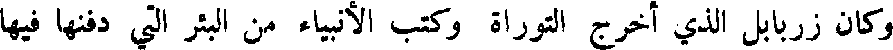
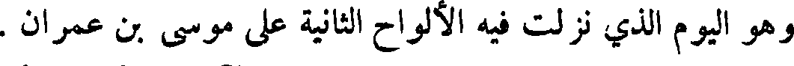
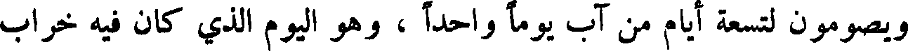
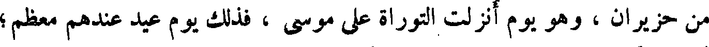
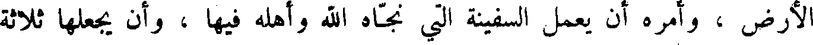
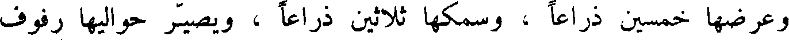
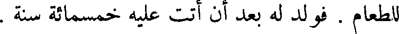
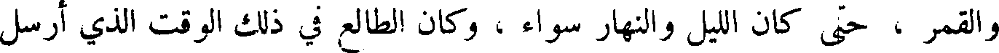
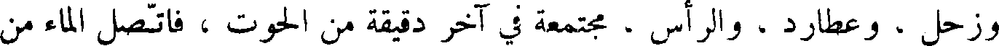

File: 000050.gt.txt (if the image is defective, simply delete all Arabic text and the line will be excluded)

وكان زربابل الذي اخرج التوراة وكتب الأنبياء من البئر التي دفنها فيها
File: 000051.gt.txt (if the image is defective, simply delete all Arabic text and the line will be excluded)

بخت نصر ، فوجدها بحالها لم تحترق ، فأعاد نسخ التوراة وكتب الأنبياء وسننهم
File: 000052.gt.txt (if the image is defective, simply delete all Arabic text and the line will be excluded)

وشرائعهم ، وكان أول من رسم هذه الكتب .
File: 000053.gt.txt (if the image is defective, simply delete all Arabic text and the line will be excluded)

وكانت شريعة بني إسرائيل توحيد الله ، والإقرار بنبوة موسى وهارون
File: 000054.gt.txt (if the image is defective, simply delete all Arabic text and the line will be excluded)

ابني عمران بن قاهث بن لاوي بن يعقوب بن إسحاق بن إبراهيم خليل الله ،
File: 000055.gt.txt (if the image is defective, simply delete all Arabic text and the line will be excluded)

وكان صيامهم في كل سنة ستة أيام أولها في رأس السنة ، وهم يعدون رأس
File: 000056.gt.txt (if the image is defective, simply delete all Arabic text and the line will be excluded)

السنة أول يوم من تشرين ، فإذا مضى من تشرين عشرة أيام صاموا يوما واحدا ،
File: 000057.gt.txt (if the image is defective, simply delete all Arabic text and the line will be excluded)

وهو اليوم الذي نزلت فيه الألواح الثانية على موسى بن عمران .
File: 000058.gt.txt (if the image is defective, simply delete all Arabic text and the line will be excluded)

ويصومون لعشر خلون من كانون الآخر يوما واحدا ، وهو يوم نجى
File: 000059.gt.txt (if the image is defective, simply delete all Arabic text and the line will be excluded)

الله بني إسرائيل من هامان .
File: 000060.gt.txt (if the image is defective, simply delete all Arabic text and the line will be excluded)

ويصومون لسبعة عشر يوما من تموز يوما واحدا ، وهو اليوم الذي نزل فيه
File: 000061.gt.txt (if the image is defective, simply delete all Arabic text and the line will be excluded)

موسى من الطور .
File: 000062.gt.txt (if the image is defective, simply delete all Arabic text and the line will be excluded)

ويصومون لتسعة أيام من آب يوما واحدا ، وهو اليوم الذي كان فيه خراب
File: 000063.gt.txt (if the image is defective, simply delete all Arabic text and the line will be excluded)

بيت المقدس .
File: 000064.gt.txt (if the image is defective, simply delete all Arabic text and the line will be excluded)

ويصومون لثلاثة أيام من تشرين ، وهو الذي قتل فيه قدريا بن اخيقام .
File: 000065.gt.txt (if the image is defective, simply delete all Arabic text and the line will be excluded)

ولهم أربعة أعياد في السنة : عيد الفطير ، وهو اليوم الذي خرج فيه موسى
File: 000066.gt.txt (if the image is defective, simply delete all Arabic text and the line will be excluded)

ببني إسرائيل من مصر ، فحملوا عجينهم ، ولم يختمر ، فأكلوا فطيرا ، وهو
File: 000067.gt.txt (if the image is defective, simply delete all Arabic text and the line will be excluded)

لخمسة عشر يوما من نيسان ، وأيامه سبعة أيام؛ ثم عيد لستة عشر يوما يمضي
File: 000068.gt.txt (if the image is defective, simply delete all Arabic text and the line will be excluded)

من حزيران ، وهو يوم أنزلت التوراة على موسى ، فذلك يوم عيد عندهم معظم ؛
File: 000069.gt.txt (if the image is defective, simply delete all Arabic text and the line will be excluded)

ثم عيد أول يوم من تشرين ، وهو رأس السنة عندهم ؛ ثم عيد في خمسة عشر
File: 000070.gt.txt (if the image is defective, simply delete all Arabic text and the line will be excluded)

يوما من تشرين ، وهو عيد المظلة ، ومعناها أن الله ، عز وجل ، أمر موسى أن
File: 000071.gt.txt (if the image is defective, simply delete all Arabic text and the line will be excluded)

الأرض ، وأمره أن يعمل السفينة التي نجاه الله وأهله فيها ، وان يجعلها ثلاثة
File: 000072.gt.txt (if the image is defective, simply delete all Arabic text and the line will be excluded)

بيوت سفلا ووسط وعلوا ، وأمره أن يجعل طولها ثلاثمائة ذراع بذراع نوح ،
File: 000073.gt.txt (if the image is defective, simply delete all Arabic text and the line will be excluded)

وعرضها خمسين ذراعا ، وسمكها ثلاثين ذراعا ، ويصير حواليها رفوف
File: 000074.gt.txt (if the image is defective, simply delete all Arabic text and the line will be excluded)

الخشب ، ويكون البيت الأسفل للدواب والوحش والسباع ، ويكون الأوسط
File: 000075.gt.txt (if the image is defective, simply delete all Arabic text and the line will be excluded)

للطير ، ويكون الأعلى لنوح وأهل بيته ، ويجعل في الأعلى صهاريج الماء ، وموضعاً
File: 000076.gt.txt (if the image is defective, simply delete all Arabic text and the line will be excluded)

للطعام . فولد له بعد أن أتت عليه خمسمائة سنة .
File: 000077.gt.txt (if the image is defective, simply delete all Arabic text and the line will be excluded)

ولما فرغ نوح من عمل السفينة ، وكان ولد قابيل ، ومن اختلط بهم من ولد
File: 000078.gt.txt (if the image is defective, simply delete all Arabic text and the line will be excluded)

شيث ، إذا رأوه يعمل الفلك سخروا منه ، فلما فرغ دعاهم إلى الركوب فيها ،
File: 000079.gt.txt (if the image is defective, simply delete all Arabic text and the line will be excluded)

وأعلمهم أن الله باعث الطوفان على الأرض كلها حتى يطهرها من أهل المعاصي
File: 000080.gt.txt (if the image is defective, simply delete all Arabic text and the line will be excluded)

فلم يجبه أحد منهم ، فصعد هو وولده إلى مغارة الكنز ، فاحتملوا جسد آدم ،
File: 000081.gt.txt (if the image is defective, simply delete all Arabic text and the line will be excluded)

فوضعوه في وسط البيت الأعلى من السفينة ، يوم الجمعة لسبع عشرة ليلة خلت
File: 000082.gt.txt (if the image is defective, simply delete all Arabic text and the line will be excluded)

من آذار ، وادخل الطير البيت الأوسط ؛ وادخل الدواب والسباع البيت الأسفل ،
File: 000083.gt.txt (if the image is defective, simply delete all Arabic text and the line will be excluded)

وأطبقها حين غابت الشمس .
File: 000084.gt.txt (if the image is defective, simply delete all Arabic text and the line will be excluded)

و أرسل الله الماء من السماء ، وفجر عيون الأرض ، فالتقى الماء على أمر قد
File: 000085.gt.txt (if the image is defective, simply delete all Arabic text and the line will be excluded)

قدر ، واخذ الأرض كلها والجبال ، وأظلمت الدنيا ، وذهب ضوء الشمس
File: 000086.gt.txt (if the image is defective, simply delete all Arabic text and the line will be excluded)

والقمر ، حتى كان الليل والنهار سواء ، وكان الطالع في ذلك الوقت الذي أرسل
File: 000087.gt.txt (if the image is defective, simply delete all Arabic text and the line will be excluded)

الله تعالى فيه الماء ، فيما يقول أصحاب الحساب : السرطان ، والشمس ، والقمر ،
File: 000088.gt.txt (if the image is defective, simply delete all Arabic text and the line will be excluded)

وزحل ، وعطارد ، والرأس ، مجتمعة في آخر دقيقة من الحوت ، فاتصل الماء من
File: 000089.gt.txt (if the image is defective, simply delete all Arabic text and the line will be excluded)

السماء والأرض أربعين يوما ، حتى علا فوق كل جبل خمس عشرة ذراعا ،
File: 000090.gt.txt (if the image is defective, simply delete all Arabic text and the line will be excluded)

ثم وقف بعد أن لم تبق بقعة من الأرض إلا غمرها الماء وعلاها .
File: 000091.gt.txt (if the image is defective, simply delete all Arabic text and the line will be excluded)

ودارت السفينة الأرض كلها حتى صارت إلى مكة ، فطافت حول البيت
File: 000092.gt.txt (if the image is defective, simply delete all Arabic text and the line will be excluded)

أسبوعاً ، ثم انكشف الماء بعد خمسة اشهر ، فكان ابتداؤه لسبع عشرة ليلة خلت
File: 000093.gt.txt (if the image is defective, simply delete all Arabic text and the line will be excluded)

من أيار إلى ثلاث عشرة ليلة خلت من تشرين أول .
File: 000094.gt.txt (if the image is defective, simply delete all Arabic text and the line will be excluded)

وروى بعضهم أن نوحاً ركب السفينة أول يوم من رجب ، واستوت على
File: 000095.gt.txt (if the image is defective, simply delete all Arabic text and the line will be excluded)

شيث بن آدم
File: 000096.gt.txt (if the image is defective, simply delete all Arabic text and the line will be excluded)

وقام بعد موت آدم ابنه شيث وكان يأمر قومه بتقوى الله سبحانه
File: 000097.gt.txt (if the image is defective, simply delete all Arabic text and the line will be excluded)

والعمل الصالح ، وكانوا يسبحون الله ويقدسونه ، وأبناؤهم ونساؤهم ليس
File: 000098.gt.txt (if the image is defective, simply delete all Arabic text and the line will be excluded)
بينهم عداوة ، ولا تحاسد ، ولا تباغض ، ولا تهمة ، ولا كذب ، ولا خلف ،
File: 000099.gt.txt (if the image is defective, simply delete all Arabic text and the line will be excluded)

وكان أحدهم إذا أراد أن يحلف قال : لا ودم هابيل .